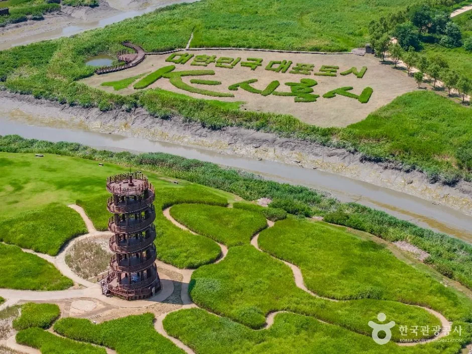
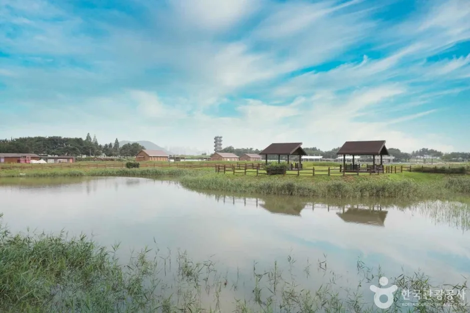
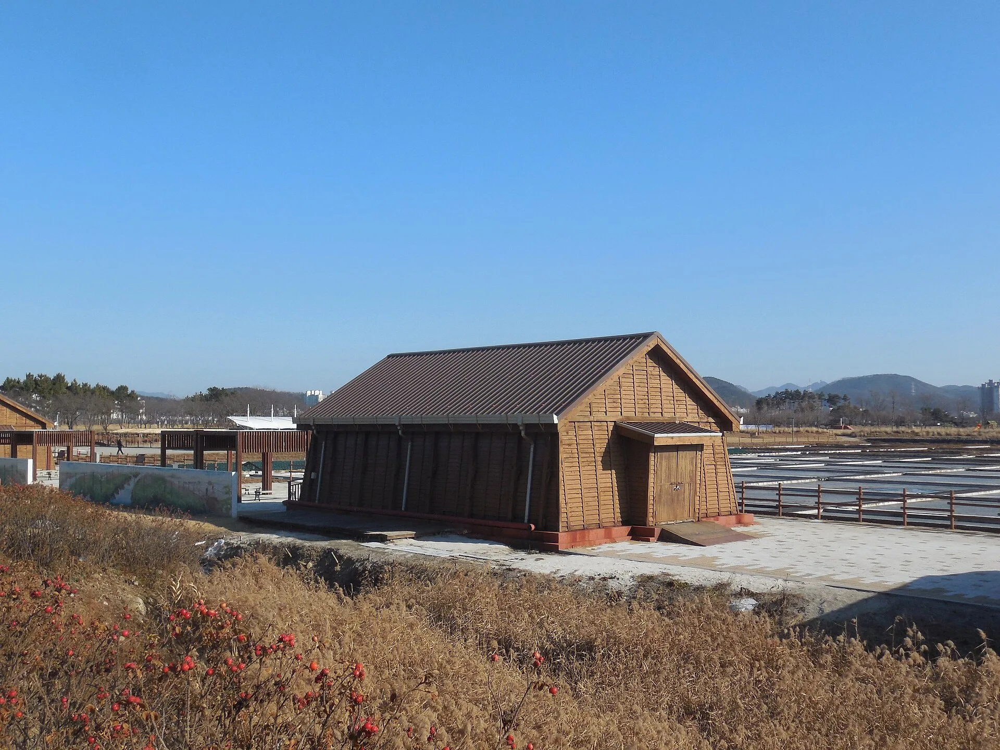
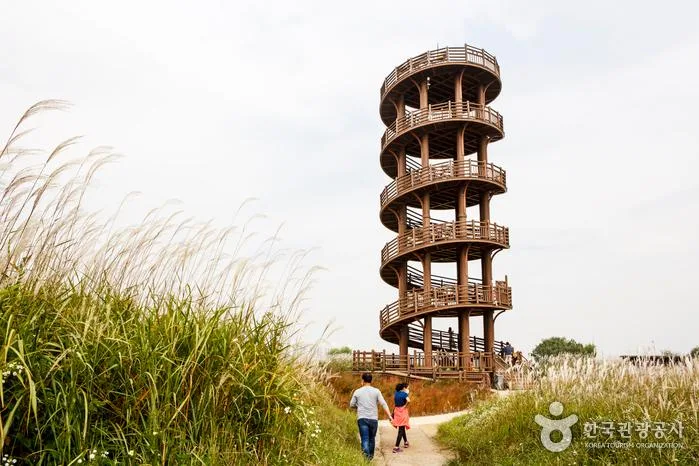
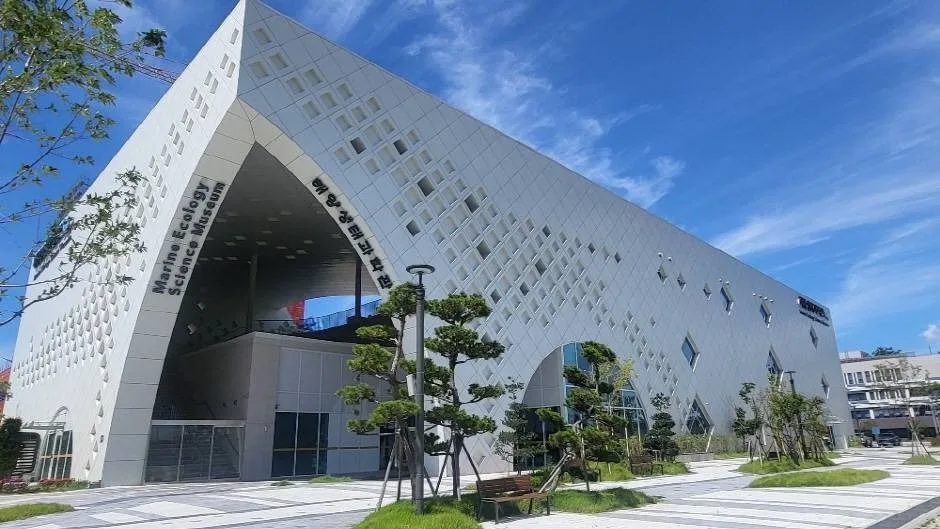
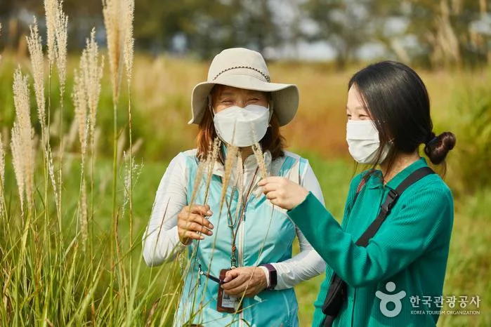
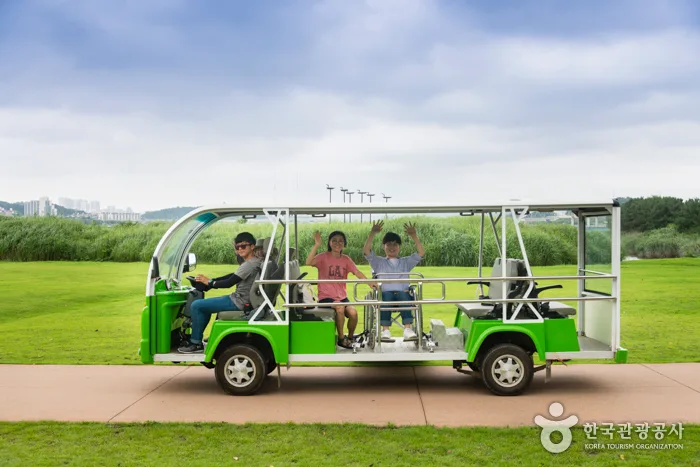
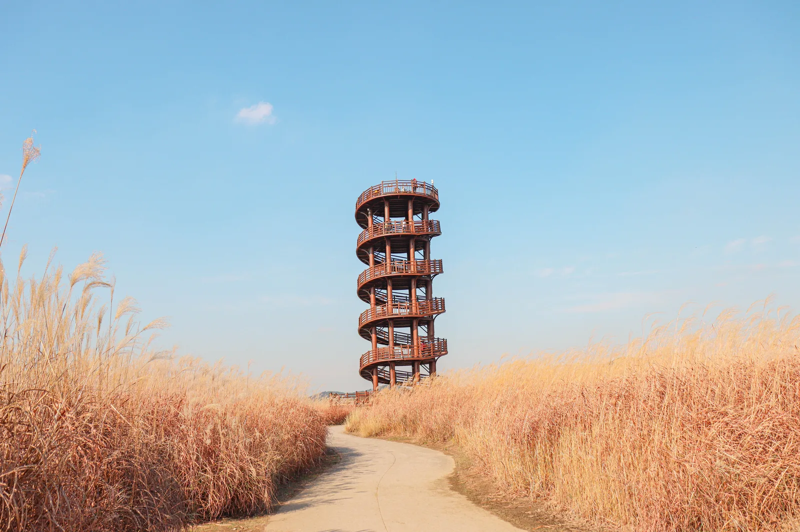

▲ 시흥갯골생태공원의 랜드마크 흔들전망대(높이 22m, 6층 목조 전망대)를 하늘에서 내려다본 모습 ⓒ 한국관광공사

▲ 시흥갯골생태공원 전경. 경기도 유일의 내만갯골과 옛 염전 터가 어우러진 생태공원이다 ⓒ 한국관광공사
9월 18일부터 20일까지 사흘간, 시흥갯골생태공원 일원에서 제21회 시흥갯골축제가 열린다. '바다가 그린 길, 바람이 만든 예술'을 주제로, 공원 전역을 8개 테마길로 나누고 21개의 체험·공연 프로그램을 배치한 시흥시 대표 생태예술축제다. 갯골이라는 낯선 지형을 처음 접하는 방문객을 위해, 축제 프로그램과 공원 자체의 볼거리, 셔틀버스·주차 정보를 함께 정리했다.
📍 시흥갯골생태공원이란
시흥갯골은 경기도에서 유일하게 남아 있는 내만갯골(바닷물이 드나드는 좁고 긴 물길)로, 일제강점기 소금밭으로 쓰였던 옛 염전 터를 생태공원으로 조성한 곳이다. 2012년 국가해양습지보호구역으로 지정됐고, 이후 국가정원으로도 이름을 올렸다. 당시 40여 동에 달했던 소금창고는 현재 2동만 남아 옛 염전 문화를 전한다.

▲ 공원 내에 복원된 소금창고. 일제강점기 40여 동에 달했던 창고 가운데 현재 2동만 남아 옛 염전의 기억을 전한다 ⓒ Wikimedia Commons (오모군, CC BY 3.0)
1. 8개 테마길, 21개 프로그램 — 무엇이 펼쳐지나
축제장은 갯골대로·생태로·생명로·염전로·바람로·잔디로·미식로·집으로, 총 8개 테마길을 중심으로 구성된다. 이 길들을 따라 체험·공연·마켓 등 21개 프로그램이 배치돼, 걷는 동선 자체가 하나의 축제 코스가 되는 구조다. 대표 프로그램은 염전 구역에서 매일 밤 20시 30분경 펼쳐지는 공연 '소금의 기억, 물의 춤'이다. 옛 염전의 기억을 몸짓과 조명으로 풀어낸 무대로, 축제의 상징과도 같은 프로그램이다.
| 프로그램 | 장소 | 시간 | 내용 |
|---|---|---|---|
| 소금의 기억, 물의 춤 | 염전 구역 | 매일 밤 약 20:30 | 염전을 소재로 한 테마 공연 |
| 콘서트 in 갯골 | 잔디광장 | 매일 18:30경 | 자전거 탄 풍경, 여행스케치, 박혜경, 서영은 등 출연 |
| 판타지 열기구 체험 | 공원 내 | 09:00~21:00(매일) | 계류식 열기구 탑승 체험 |
| 갯골 스탬프 랠리 · 갯골 탐험대 | 테마길 전역 | 상시 | 도장 수집형 가족 체험 |
| 염전 체험 · 맨발 소금길 | 염전로 | 상시 | 소금 채취 체험, 맨발 걷기 |
| 느린우체국 | 집으로 길 | 상시 | 손편지 작성·발송 체험 |
2. 무료입장, 수소전기 셔틀버스 44대

▲ 갯골생태공원 내에서 운행되는 전동 탐방 차량. 축제 기간에는 친환경 수소전기 셔틀버스 44대가 무료로 투입된다 ⓒ 한국관광공사
축제는 무료입장으로 운영된다. 축제 기간 교통 편의를 위해 친환경 수소전기 셔틀버스 44대가 무료로 운행되며, 주요 거점은 시흥시청 정문, 오이도역(배곧 경유), 신천역(은계 경유), 목감지구 등이다. 대중교통이나 승용차보다 셔틀버스를 이용하면 축제장 진입이 한결 수월하다. 정확한 배차 간격과 노선도는 축제 임박 시 공식 홈페이지 공지사항에서 확정본이 게시되므로, 방문 전 재확인하는 것이 안전하다. 시흥갯골축제 공식 홈페이지 확인 가능
3. 가족 단위 방문 포인트 — 흔들전망대와 해양생태과학관

▲ 시흥 해양생태과학관. 갯골의 갯벌 생태를 전시로 풀어낸 시설로, 아이 동반 방문객에게 특히 인기가 높다 ⓒ 한국관광공사
축제 기간이 아니어도 갯골생태공원은 아이와 함께 가기 좋은 곳으로 꼽힌다. 공원의 랜드마크인 흔들전망대는 높이 22m, 6층 규모의 목조 전망대로, 나선형 계단을 오르면 갯골 전체를 한눈에 담을 수 있다. 시흥 해양생태과학관에서는 칠면초·나문재 같은 염생식물과 붉은발농게 등 갯벌 생물을 전시로 만날 수 있어 아이들의 생태 학습 코스로도 좋다. 공원은 무장애 시설(점자 안내판, 평탄로, 경사로)도 갖추고 있어 유모차나 휠체어 이용객도 비교적 수월하게 둘러볼 수 있다.

▲ 갯골을 따라 이어지는 산책로. 해설사와 동행하는 생태 탐방 코스도 별도로 운영된다 ⓒ 한국관광공사
4. 가을 갯골의 색 — 소금꽃과 갈대밭

▲ 가을이면 칠면초·나문재 등 염생식물이 붉은보라빛으로 물들어 '소금꽃'이 핀 듯한 풍경을 만든다 ⓒ 한국관광공사
9월은 시흥갯골이 가장 화려해지는 시기이기도 하다. 칠면초·나문재·퉁퉁마디 같은 염생식물이 붉은보라빛으로 물들어 이른바 '소금꽃 피는 계절'을 이루고, 갈대밭은 순천만 습지에 견줄 만한 규모로 펼쳐진다. 축제 기간에는 이 풍경 속에서 콘서트와 체험 프로그램이 함께 열리는 셈이어서, 사진 촬영을 겸한 방문객이라면 오후 늦은 시간대에 맞춰 가는 것도 방법이다.

▲ 늦가을 갯골생태공원을 찾은 가족 단위 방문객. 축제 기간이 아니어도 산책과 나들이 코스로 꾸준히 인기가 높다 ⓒ 한국관광공사
5. 주차와 오시는 길
축제 기간에는 인근 도로 혼잡이 예상되는 만큼, 시흥시는 무료 수소전기 셔틀버스 운행을 확대해 승용차 이용을 최소화할 것을 권장하고 있다. 자가용으로 방문할 경우 공원 주차장을 이용할 수 있지만, 축제 기간 주말에는 만차가 빠르게 발생할 수 있어 오전 이른 시간 방문이 유리하다. 정확한 주차장 위치와 요금, 혼잡 시간대별 우회 안내는 축제 임박 시 공식 홈페이지와 시흥시 공식 채널에 공지될 예정이다.
✅ 시흥갯골축제, 이것만은 확인하세요
· 2026년 9월 18일(금)~20일(일), 시흥갯골생태공원 일원, 무료입장
· 8개 테마길·21개 프로그램, 대표 공연 '소금의 기억, 물의 춤'(염전 구역, 매일 밤)
· '콘서트 in 갯골'(잔디광장, 매일 18:30경), 판타지 열기구 체험(09:00~21:00)
· 축제 기간 무료 수소전기 셔틀버스 44대 운행(시흥시청·오이도역·신천역·목감지구 등 경유)
· 흔들전망대·해양생태과학관은 축제 기간 아니어도 상시 관람 가능
6. 정리
제21회 시흥갯골축제는 국가정원으로 지정된 갯골생태공원 전체를 무대로 삼아, 염전의 기억을 담은 공연과 생태 체험, 가족 프로그램을 촘촘히 배치했다. 무료입장에 무료 셔틀버스까지 더해져 접근 부담도 크지 않다. 축제가 아니어도 흔들전망대와 해양생태과학관, 가을 염생식물 군락은 시흥갯골생태공원을 사계절 방문할 이유로 남는다.